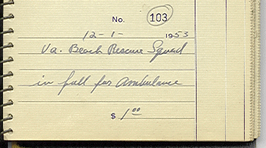
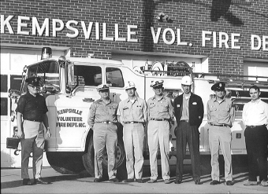
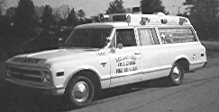
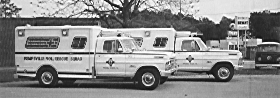
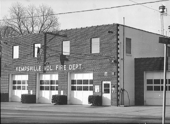
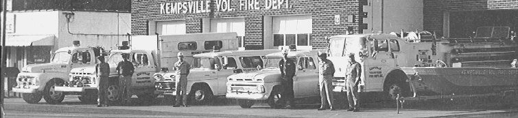

| |
K E M P S V I L L E V O L U N T E E R R E S C U E S Q U A D |
Our Past |
Add or view comments. |
In 1950, a group of Kempsville residents, most of whom were members of the local Amish-Mennonite community, chartered the Kempsville Volunteer Fire Department. It was Princess Anne County's ninth such organization (Company #9). Within three years, the firefighters had purchased their first ambulance for the sum of one dollar from the rescue squad that had just formed in the distant town of Virginia Beach (now the resort strip area).
(Unless otherwise noted, photos on this page are from 1963, on the occasion of the delivery of a new fire truck.)
Kempsville's first real fire station was built in 1956. Our charter members told of days when the wail of the station siren alerted them to emergencies. One cycle for an ambulance call, two for a fire call, three for a motor vehicle crash. When the siren wailed, a relay activated the truck radios so their tubes would warm up by the time the drivers arrived. Firefighters riding the engine's tailboard would toss bags of chalk onto the ground at every turn, so that other responders would know how to get to the scene. The station siren was phased out in the 70's, as pagers became more affordable.
By 1967, rescue calls were outnumbering fire calls, and a charter was drawn up for a spin-off company called the Kempsville Rescue Squad. The two all-volunteer companies operated as a partnership for thirty years.
Unit 901, a 1968 Chevy Custom Ambulance, was retired in 1971 with 36,500 miles on its odometer.
Also in the mid 70's, progressive members of the city's several rescue squads had secured a federal grant to develop an advanced life support capability for their organizations. The Emergency Coronary Care Program, as it was known, led to the establishment of the Council of Virginia Beach Volunteer Rescue Squads, Inc., and the municipal Department of Emergency Medical Services. Both agencies, as well as KVRS and the other ten independent rescue squad corporations, are now recognized in city code as official components of the city's emergency services.
The next Unit 901 and its sibling, Unit 903 were 1971 Ford F350 Sports Custom chassis with Swab Modular Compact boxes. Note the introduction of the green stripe and the logo. KVRS has stuck with modular ambulances and the logo ever since.
In the late 70's and throughout the 80's, Kempsville was the fastest growing borough in the city. The phenomenal growth took its toll on the Kempsville Volunteer Fire Department, and taxed the Kempsville Rescue Squad to its limits.
When the fire department and rescue squad moved into a new city building in 1982, the old building escaped destruction to become the Hagan's Seafood Restaurant and now the Harmon Glass store.
In the 90's, the squad has emerged as a prominent leader in Virginia Beach's EMS system.
On July 1st, 1997, the squad absorbed the Kempsville Volunteer Fire Department, and focused its mission sharply on EMS, rescue, and support services. The squad's long-term vision statement is a reflection of its past, with the flexibility to allow the squad to change its shorter-term mission to fit the times.

$Id$